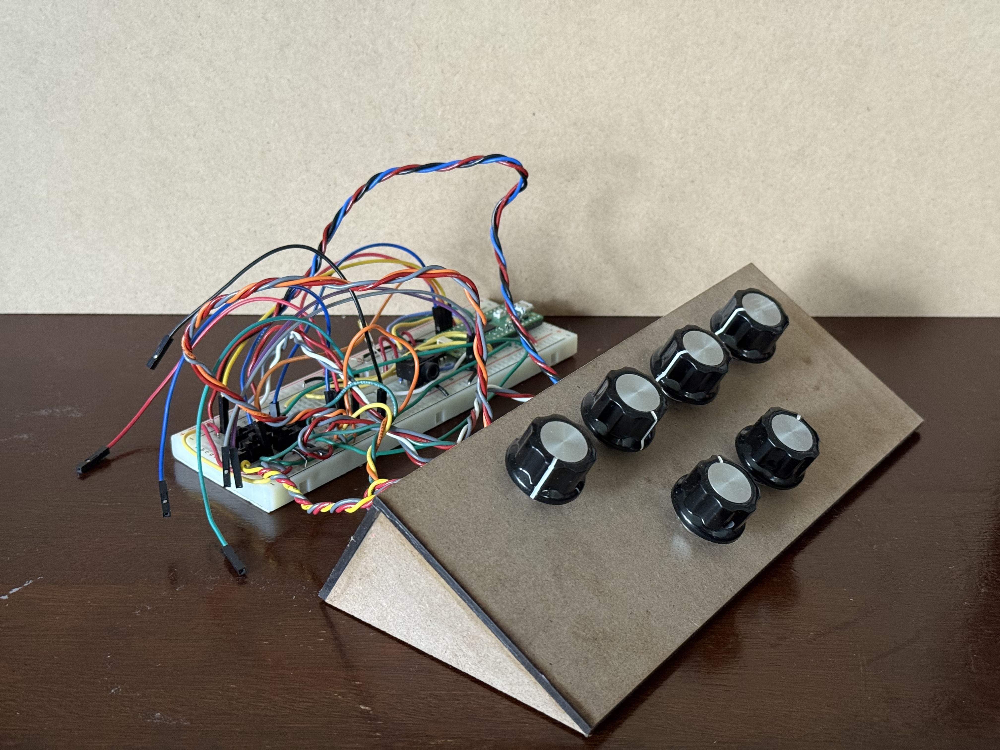

Project Introduction
A hands-on teaching synthesizer with real-time visual feedback to help beginners understand sound synthesis.
Summary
We developed an educational synthesizer device designed to simplify the learning process for new electronic musicians. The device features six knobs that adjust the sound envelope and frequency, a switch to toggle between sine and square waveforms, and a live VGA display that visualizes the current waveform, frequency spectrum, and envelope stage. Our motivation stemmed from the observation that most synthesizers are challenging for beginners, often requiring trial and error to understand their controls. By providing immediate audio and visual feedback, our device demystifies core synthesis concepts such as the ADSR envelope, frequency manipulation, and waveform differences, making sound design more accessible.
Demonstration video
High Level Design
In our design, we utilize two cores. Core 0 primarily runs a single thread and handles two interrupt service routines: one for receiving user input-where the user can rotate six potentiometers to adjust parameters-and another that triggers every 20 microseconds to compute values and send them to the DAC module via SPI transactions. Core 1 runs a separate thread that is primarily responsible for VGA signal generation.
Rationale and Sources
Synthesizers are notoriously difficult for beginners due to their abstract controls and lack of intuitive feedback. While high-end synthesizers may include small displays for envelope visualization, entry-level and DIY models typically offer only labeled knobs and buttons, which can be confusing. Our project aims to bridge this gap by combining tactile controls with clear visual feedback, introducing users to essential synthesis concepts like attack, decay, sustain, and release (ADSR).
Background Math
There are four stages in generating an ADSR signal: Attack, Decay, Sustain, and Release.
-
Attack: In the attack stage, we use an exponential function to shape the amplitude
over time. The mathematical formulation is:
The constant τ in the attack stage determines the rate at which the amplitude increases. We will discuss how this value is chosen in a later section.Amplitudet = 1 − exp(−t / τ) -
Decay: In the decay stage, we use a linear function to shape the amplitude over
time. The mathematical formulation is:
The maximum attack amplitude is determined based on the amplitude reached at the end of the attack stage. The decay duration is set according to user input. If the computed amplitude falls below the user-defined sustain level, it is clamped to the sustain level to ensure stability in the envelope.Amplitudet = Amplitudet-1 − (Max_Attack_Amplitude / Decay_Time)
Amplitudet = max(Amplitudet, Sustain_Level) -
Sustain: In the sustain stage, the amplitude is held constant at the user-defined
sustain level. The mathematical formulation is:
Both the sustain level and the sustain duration are determined based on user input.Amplitudet = Sustain_Level -
Release: In the release stage, the amplitude decreases linearly from the sustain
level to zero over a duration defined by the user-specified release time.
Both the sustain level and the release time are determined based on user input.Amplitudet = Amplitudet-1 − (Sustain_Level / Release_Time)
We applied both sine and square waveforms as the base signals that pass through the ADSR envelope to demonstrate the system’s versatility in shaping different types of input signals. Only one waveform is used at a time, and the user can select between sine and square waveforms via a switch input.
Logical Structure & Software Architecture
Thread Responsibilities
- User Input Thread: In this thread, six switches are used to allow the user to select which parameter to adjust—namely, attack time, decay time, sustain time, sustain level, release time, and frequency. An additional switch enables the user to choose between a sine wave or a square wave as the base waveform. Six potentiometers are available to provide analog input, which are read by the system in real time. The thread continuously monitors the switch states to identify the active parameter and then reads the corresponding potentiometer value to update that parameter dynamically.
- VGA Thread: In the VGA thread, an animation is displayed to indicate the current stage of the ADSR envelope—Attack, Decay, Sustain, or Release. Additionally, the current amplitude and output frequency are shown on the screen in real time, enhancing user engagement and interaction. This thread continuously updates the display with the latest information to reflect system behavior accurately.
Interrupt Service Routine (ISR)
The timer-based interrupt service routine (ISR) on core 0 handles the system’s core audio generation and operates as a state machine implementing the ADSR (Attack, Decay, Sustain, Release) envelope.
The state machine includes two main stages: STATE_0 = 0, which generates sound, and STATE_0 = 1, which remains silent. A counter continuously increments within the ISR and triggers a state transition when it reaches a predefined threshold—resetting the counter and switching to the alternate stage.
In STATE_0 = 0, which is responsible for producing sound, the ISR calculates the amplitude using parameters obtained from the user input thread. Based on the current counter value, it performs exponential growth during the Attack phase, linear decay toward the user-defined Sustain level during the Decay phase, maintains the amplitude in the Sustain phase, and applies a linear decrease during the Release phase. The amplitude is then used in a Direct Digital Synthesis (DDS) routine to generate the waveform, either sine or square, according to user selection, and the result is transmitted to the DAC via SPI for audio output.
Inter-thread Communication
All threads share global variables such as attack time, decay time, sustain time, sustain level, release time, and frequency, which are safely updated by the input thread and read by the ISR and VGA threads.
Overall Software Architecture
- Core 0: Runs audio ISR and real-time synthesis
- Core 1: Manages user input and VGA display threads
Hardware/Software Tradeoffs
The Raspberry Pi Pico we used provides only three analog inputs, but our design required six potentiometers. To address this, we implemented a manual multiplexing solution using double-throw switches: two switches per potentiometer pair-one to send a high/low signal to a GPIO pin and another to select between potentiometer wipers for the analog input. Although unconventional and somewhat confusing, this approach allowed us to meet our design goals within our time constraints.
We initially planned to use an MCP3008 ADC to expand our analog inputs, but we encountered difficulties finding reliable libraries and did not have time to write our own driver. Given our concurrent commitments to other projects, we opted for the manual multiplexing approach, which, while unorthodox, proved effective and even enjoyable from a hardware-hacking perspective.
Program/Hardware Details
In this figure, "A" stands for attack time, "D" for decay time, "ST" for sustain time, "R" for release time, "SL" for sustain level, and "F" for frequency. For example, to adjust the sustain level (labeled in blue), the user should rotate the potentiometer and set both switches to the correct position.
Our device uses six 10kΩ potentiometers with infinite rotation for a smooth tactile experience. The enclosure is a custom laser-cut structure made from medium-density fiberboard (MDF). Each potentiometer's diameter was measured and slightly enlarged in CAD to ensure a proper fit, along with a hole for the small protrusion on the potentiometer which later will provide rigidity. The layout places four knobs on the top panel and two on the bottom, all evenly spaced. The side panels are triangular, forming a wedge-shaped housing, while the back panel features a large notch for cable management. The enclosure is spacious enough to accommodate the breadboard and Raspberry Pi Pico, though for ease of debugging, the electronics were kept external during development. The panels were assembled using wood glue. The potentiometers were inserted to the holes and the notches aligned, then the nuts that came with the potentiometers were secured on top of the panel such that the potentiometer shafts could spin without the body spinning. Knob caps were pushed onto each potentiometer shaft for ease of use. The knobs also allow for finer adjustment of each potentiometer because of their larger diameter.
Program Details
The software component was responsible for generating the sound, handling user input from the potentiometers and switches, and rendering the real-time waveform and frequency displays via VGA. The most challenging aspect of the code was accurately implementing the decay phase of the ADSR envelope, which required careful timing and state management. Since the decay phase transitions into the sustain level rather than decaying to zero, it requires precise timing and careful state management. Additionally, due to time constraints within the interrupt service routine (ISR), it was crucial to minimize the decay computation time to avoid delays that could disrupt real-time performance.
Through repeated testing, we ultimately chose to implement a linear decay, tuning its parameters empirically to strike a balance between responsiveness and envelope accuracy.
ADSR Envelope Parameter Configuration
In our system, we implement a standard four-stage ADSR (Attack, Decay, Sustain, Release) envelope. The parameters for each stage are carefully chosen based on empirical testing and auditory evaluation to ensure a natural and responsive user experience.
Parameter Settings:
- Time Constant (τ): Set to 1500 in the attack stage, determines the rate of exponential amplitude increase
- Stage Durations (Attack, Decay, Sustain, Release): Controlled by user input (via potentiometers), constrained to the range of 200 to 35,500 interrupt cycles to ensure system stability and perceptual effectiveness.
- Sustain Level: Limited the amplitude to a range of 0.3 to 1.0, providing a more reasonable and audible experience during operation and testing.
- Frequency: To enhance user engagement and flexibility in sound synthesis, we implemented user-adjustable frequency control, allowing output frequencies to range from 200 Hz to 1 kHz.
Switch and Potentiometer Configuration
We use a total of seven switches and six potentiometers in our system to provide full user control over sound synthesis parameters. One switch is dedicated to toggling between sine and square waveform outputs. The remaining six switches are divided into two functional groups of three.
Due to the RP2040's limitation of only three ADC input pins, we implemented a clever configuration:
- Three switches are used to indicate which of the six parameters (attack time, decay time, sustain time, sustain level, release time, frequency) the user wants to adjust.
- The other three switches serve as a 'multiplexer' control to determine which potentiometer's analog signal is routed to the ADC input at a given time.
This design allows us to effectively control six parameters with only three ADC channels, making efficient use of limited hardware resources.
Use of External Design or Code
Our project builds upon sample code provided in the Hunter-Adams-RP2040-Demos repository. Specifically, we referenced and adapted the c_Audio_Beep_Synthesis_Single_Core example from the Audio section to implement and extend our own audio synthesis framework.
Unsuccessful Attempts
- ADC Integration: We attempted to use the MCP3008 ADC for analog input expansion but were unable to find a working software library in time, leading us to implement manual multiplexing with switches instead.
Results of the Design
- Test Data: Above is a comparison of a direct oscilloscope reading from the DAC and our display.
- Speed of Execution: The system responds interactively, with minimal hesitation or flicker in both audio output and VGA display.
- Accuracy: The device accurately synthesizes musical frequencies and displays the correct waveform and envelope stage in real time.
- Safety: Low voltage/current and insulated wiring, with an MDF enclosure for safety.
- Usability: Tested by team members and peers, with intuitive controls and helpful visual feedback.
Relevant Patents, Copyrights, and Trademarks
To the best of our knowledge, there are no existing patents, copyrights, or trademarks directly relevant to our project. Sound synthesis is very open source, and the DIY community is very strong.
Conclusions
- Design Analysis: The device met all expectations, successfully generating sound and aiding learning with real-time visualization.
- Future Improvements: Consider migrating to a PCB, using a real multiplexer, and integrating a dedicated VGA port or display.
- Standards Compliance: Complies with DIY synthesizer standards for audio and video output.
- Intellectual Property: No proprietary code or hardware reused; project is open for replication and teaching.
Appendices
Appendix A: Permissions
- Approved for inclusion on the course website and YouTube channel.
Appendix B: Program Listings
/** * HARDWARE CONNECTIONS
* DAC CONNECTIONS
* - GPIO 5 (pin 7) ---> Chip select
* - GPIO 6 (pin 9) ---> SCK/spi0_sclk
* - GPIO 7 (pin 10) ---> MOSI/spi0_tx
* - GPIO 2 (pin 4) ---> GPIO output for timing ISR
* - 3.3v (pin 36) ---> VCC on DAC
* - GND (pin 3) ---> GND on DAC
* VGA CONNECTIONS
* - GPIO 16 ---> VGA Hsync
* - GPIO 17 ---> VGA Vsync
* - GPIO 18 ---> 470 ohm resistor ---> VGA Green
* - GPIO 19 ---> 330 ohm resistor ---> VGA Green
* - GPIO 20 ---> 330 ohm resistor ---> VGA Blue
* - GPIO 21 ---> 330 ohm resistor ---> VGA Red
* - RP2040 GND ---> VGA GND
* ADC CONNECTIONS
* - GPIO 26 ---> ADC 0
* - GPIO 27 ---> ADC 1
* - GPIO 28 ---> ADC 2
* Switch CONNECTIONS
* - GPIO 9 ---> Switch
* - GPIO 10 ---> Switch
* - GPIO 11 ---> Switch
* - GPIO 12 ---> Switch
*/
// Include necessary libraries
#include
#include
#include
#include
#include "pico/stdlib.h"
#include "pico/multicore.h"
#include "hardware/spi.h"
#include "hardware/sync.h"
#include "hardware/adc.h"
#include "hardware/pio.h"
#include "hardware/dma.h"
// Include custom libraries
#include "vga16_graphics.h"
// Include protothreads
#include "pt_cornell_rp2040_v1_3.h"
// Low-level alarm infrastructure we'll be using
#define ALARM_NUM 0
#define ALARM_IRQ TIMER_IRQ_0
// Macros for fixed-point arithmetic (faster than floating point)
typedef signed int fix15 ;
#define multfix15(a,b) ((fix15)((((signed long long)(a))*((signed long long)(b)))>>15))
#define float2fix15(a) ((fix15)((a)*32768.0))
#define fix2float15(a) ((float)(a)/32768.0)
#define absfix15(a) abs(a)
#define int2fix15(a) ((fix15)(a << 15))
#define fix2int15(a) ((int)(a >> 15))
#define char2fix15(a) (fix15)(((fix15)(a)) << 15)
#define divfix(a,b) (fix15)( (((signed long long)(a)) << 15) / (b))
// Max and min macros
#define max(a,b) ((a>b)?a:b)
#define min(a,b) ((aintr, 1u << ALARM_NUM);
// Reset the alarm register
timer_hw->alarm[ALARM_NUM] = timer_hw->timerawl + DELAY ;
if (STATE_0 == 0) {
// DDS phase and sine table lookup or square wave table lookup
phase_accum_main_0 += phase_incr_main_0 ;
if (gpio_get(PIN_SWTICH3) == 0) {
DAC_output_0 = fix2int15(multfix15(current_amplitude_0,
sin_table[phase_accum_main_0>>24])) + 2048 ;
gpio_put(LED, 1) ;
}
else {
DAC_output_0 = fix2int15(multfix15(current_amplitude_0,
square_table[phase_accum_main_0>>24])) + 2048 ;
gpio_put(LED, 0) ;
}
// total beep time
BEEP_DURATION = ATTACK_TIME + DECAY_TIME + SUSTAIN_TIME + RELEASE_TIME;
// Attack
if (count_0 < ATTACK_TIME) {
current_amplitude_0 = int2fix15(1) - float2fix15(exp(-(float)count_0 / 1500));
status=0;
attack_amp = current_amplitude_0;
}
// Decay
else if ((count_0 > ATTACK_TIME )&& (count_0 < (ATTACK_TIME + DECAY_TIME))){
status=1;
decay_inc = divfix(attack_amp, int2fix15(DECAY_TIME)) ;
current_amplitude_0 = current_amplitude_0 - decay_inc;
if((current_amplitude_0 <= float2fix15(SUSTAIN_LEVEL) )){
current_amplitude_0 = float2fix15(SUSTAIN_LEVEL);
}
}
// Sustain
else if (count_0 > (ATTACK_TIME + DECAY_TIME) && count_0 < (ATTACK_TIME + DECAY_TIME + SUSTAIN_TIME)){
current_amplitude_0 = float2fix15(SUSTAIN_LEVEL);
sus_amp = current_amplitude_0;
status=2;
}
// Release
else if (count_0 >= (ATTACK_TIME + DECAY_TIME + SUSTAIN_TIME)){
decay_inc = divfix(sus_amp, int2fix15(RELEASE_TIME)) ;
current_amplitude_0 = current_amplitude_0 - decay_inc;
status=3;
}
// Mask with DAC control bits
DAC_data_0 = (DAC_config_chan_B | (DAC_output_0 & 0xffff)) ;
// SPI write (no spinlock b/c of SPI buffer)
spi_write16_blocking(SPI_PORT, &DAC_data_0, 1) ;
// Increment the counter
count_0 += 1 ;
// State transition?
if (count_0 >= BEEP_DURATION) {
STATE_0 = 1 ;
count_0 = 0 ;
}
}
// State transition?
else {
count_0 += 1 ;
status = -1;
current_amplitude_0 = 0 ;
if (count_0 == BEEP_REPEAT_INTERVAL) {
current_amplitude_0 = 0 ;
STATE_0 = 0 ;
count_0 = 0 ;
}
}
// De-assert the GPIO when we leave the interrupt
gpio_put(ISR_GPIO, 0) ;
}
// This thread runs on core 0
static PT_THREAD (protothread_core_0(struct pt *pt))
{
// Indicate thread beginning
PT_BEGIN(pt) ;
while(1) {
// Toggle on LED
gpio_put(LED, !gpio_get(LED)) ;
// Yield for 500 ms
PT_YIELD_usec(500000) ;
}
// Indicate thread end
PT_END(pt) ;
}
static PT_THREAD (protothread_userinput(struct pt *pt))
{
// Mark beginning of thread
PT_BEGIN(pt);
while(1){
// Start the ADC channel
// Select analog input
adc_select_input(ADC_CHAN_0) ;
uint16_t result_0 = adc_read();
// Use switch to determine whether to adjust ATTACK or RELEASE TIME
if (gpio_get(PIN_SWTICH1) == 0) {
ATTACK_TIME = (result_0 /4095.0f * 35300 + 200);
}else{
RELEASE_TIME = (result_0 /4095.0f * 35300 + 200);
}
// Select analog input
adc_select_input(ADC_CHAN_1) ;
uint16_t result_1 = adc_read();
// Use switch to determine whether to adjust DECAY TIME or Frequency
if (gpio_get(PIN_SWTICH2) == 0) {
DECAY_TIME = (result_1 /4095.0f * 35300 + 200);
} else { //20000hz-70000hz generated the sound from 200hz - 1000 hz
Fs = (result_1 /4095.0f * 50000 + 20000); //default: 50khz
phase_incr_main_0 = (400.0*two32)/Fs;
}
// Select analog input
adc_select_input(ADC_CHAN_2) ;
uint16_t result_2 = adc_read();
// Use switch to determine whether to adjust SUSTAIN TIME or SUSTAIN LEVEL
if (gpio_get(PIN_SWTICH0) == 0) {
SUSTAIN_LEVEL = (result_2 /4095.0f);
if (SUSTAIN_LEVEL<0.3) SUSTAIN_LEVEL=0.3;
}else{
SUSTAIN_TIME = (result_2 /4095.0f * 35300 + 200);
}
PT_YIELD_usec(100000);
}
PT_END(pt);
} // userinput potentiometer
// Thread that draws to VGA display
static PT_THREAD(protothread_vga(struct pt *pt))
{
// Indicate start of thread
PT_BEGIN(pt);
char status_text[40];
// We will start drawing at column 81
static int xcoord = 81;
// Rescale the measurements for display
static float Range = 50000.0;
static float NewRange = 150.0;
static float OldMin = 20000.0;
static float OldRange_duty = 1;
static float OldMin_duty = 0.0;
// Control rate of drawing
static int throttle;
// Draw the static aspects of the display
setTextSize(1);
setTextColor(WHITE);
// Draw bottom plot showing the sound freqeuncy
drawHLine(75, 430, 5, CYAN);
drawHLine(75, 355, 5, CYAN);
drawHLine(75, 280, 5, CYAN);
drawVLine(80, 280, 150, CYAN);
sprintf(screentext, "650Hz");
setCursor(40, 350);
writeString(screentext);
sprintf(screentext, "1100Hz");
setCursor(40, 280);
writeString(screentext);
sprintf(screentext, "200Hz");
setCursor(40, 425);
writeString(screentext);
// Draw top plot showing the amplitude
drawHLine(75, 230, 5, CYAN);
drawHLine(75, 155, 5, CYAN);
drawHLine(75, 80, 5, CYAN);
drawVLine(80, 80, 150, CYAN);
sprintf(screentext, "0.5");
setCursor(50, 150);
writeString(screentext);
sprintf(screentext, "1");
setCursor(45, 75);
writeString(screentext);
sprintf(screentext, "0");
setCursor(45, 225);
writeString(screentext);
while (true)
{
setTextColor(WHITE) ;
sprintf(screentext, "Status:");
setCursor(150, 10);
writeStringBig(screentext);
// indicating which stage we are in
setTextColor(WHITE) ;
sprintf(status_text, "Attack Decay Sustain Release No sound ") ;
setCursor(230, 10);
writeStringBig(status_text);
drawCircle(250, 35, 5, BLACK);
drawCircle(320, 35, 5, BLACK);
drawCircle(400, 35, 5, BLACK);
drawCircle(470, 35, 5, BLACK);
drawCircle(550, 35, 5, BLACK);
if (status==0){
drawCircle(250, 35, 5, WHITE);
}else if (status==1){
drawCircle(320, 35, 5, WHITE);
}else if (status==2){
drawCircle(400, 35, 5, WHITE);
}else if (status==3){
drawCircle(470, 35, 5, WHITE);
}else {
drawCircle(550, 35, 5, WHITE);
}
// Increment drawspeed controller
throttle += 1;
// If the controller has exceeded a threshold, draw
if (throttle >= threshold)
{
// Zero drawspeed controller
throttle = 0;
// Erase a column
drawVLine(xcoord, 0, 480, BLACK);
// Draw bottom plot
drawRect(xcoord, 280 + (int)(NewRange * ((float)(Fs-OldMin) / Range)), 1, 4, RED);
// Draw top plot
drawRect(xcoord, 230 - (int)(NewRange * ((float)(fix2float15(current_amplitude_0)-OldMin_duty) /
OldRange_duty)),1,4, BLUE);
if (xcoord < 609)
{
xcoord += 1;
}
else
{
xcoord = 81;
}
}
PT_YIELD_usec(40);
}
// Indicate end of thread
PT_END(pt);
}
// ========================================
// === core 1 main -- started in main below
// ========================================
void core1_main(){
// Add animation thread
pt_add_thread(protothread_vga);
// Start the scheduler
pt_schedule_start ;
}
// Core 0 entry point
int main() {
// Initialize stdio/uart (printf won't work unless you do this!)
stdio_init_all();
// printf("Hello, friends!\n");
// Initialize SPI channel (channel, baud rate set to 20MHz)
spi_init(SPI_PORT, 20000000) ;
// Format (channel, data bits per transfer, polarity, phase, order)
spi_set_format(SPI_PORT, 16, 0, 0, 0);
// Map SPI signals to GPIO ports
gpio_set_function(PIN_MISO, GPIO_FUNC_SPI);
gpio_set_function(PIN_SCK, GPIO_FUNC_SPI);
gpio_set_function(PIN_MOSI, GPIO_FUNC_SPI);
gpio_set_function(PIN_CS, GPIO_FUNC_SPI) ;
// Map LDAC pin to GPIO port, hold it low (could alternatively tie to GND)
gpio_init(LDAC) ;
gpio_set_dir(LDAC, GPIO_OUT) ;
gpio_put(LDAC, 0) ;
// Setup the ISR-timing GPIO
gpio_init(ISR_GPIO) ;
gpio_set_dir(ISR_GPIO, GPIO_OUT);
gpio_put(ISR_GPIO, 0) ;
// Map LED to GPIO port, make it low
gpio_init(LED) ;
gpio_set_dir(LED, GPIO_OUT) ;
gpio_put(LED, 0) ;
// ============================== Switch CONFIGURATION ==========================
gpio_init(PIN_SWTICH0);
gpio_set_dir(PIN_SWTICH0, GPIO_IN);
gpio_pull_up(PIN_SWTICH0);
gpio_init(PIN_SWTICH1);
gpio_set_dir(PIN_SWTICH1, GPIO_IN);
gpio_pull_up(PIN_SWTICH1);
gpio_init(PIN_SWTICH2);
gpio_set_dir(PIN_SWTICH2, GPIO_IN);
gpio_pull_up(PIN_SWTICH2);
gpio_init(PIN_SWTICH3);
gpio_set_dir(PIN_SWTICH3, GPIO_IN);
gpio_pull_up(PIN_SWTICH3);
///////////////////////////////////////////////////////////////////////////////
// ============================== ADC CONFIGURATION ==========================
//////////////////////////////////////////////////////////////////////////////
// Init GPIO for analogue use: hi-Z, no pulls, disable digital input buffer.
adc_gpio_init(ADC_PIN_0);
adc_gpio_init(ADC_PIN_1);
adc_gpio_init(ADC_PIN_2);
// Initialize the ADC harware
// (resets it, enables the clock, spins until the hardware is ready)
adc_init() ;
// initialize VGA
initVGA() ;
// set up increments for calculating bow envelope
attack_inc = divfix(max_amplitude, int2fix15(ATTACK_TIME)) ;
// Build the sine lookup table and square lookup table
// scaled to produce values between 0 and 4096 (for 12-bit DAC)
int ii;
for (ii = 0; ii < sine_table_size; ii++){
sin_table[ii] = float2fix15(2047*sin((float)ii*6.283/(float)sine_table_size));
if (iiinte, 1u << ALARM_NUM) ;
// Associate an interrupt handler with the ALARM_IRQ
irq_set_exclusive_handler(ALARM_IRQ, alarm_irq) ;
// Enable the alarm interrupt
irq_set_enabled(ALARM_IRQ, true) ;
// Write the lower 32 bits of the target time to the alarm register, arming it.
timer_hw->alarm[ALARM_NUM] = timer_hw->timerawl + DELAY ;
// start core 1
multicore_reset_core1();
multicore_launch_core1(&core1_main);
// Start scheduling core 0 threads
pt_add_thread(protothread_userinput);
pt_schedule_start ;
}
Appendix C: Schematics
Appendix D: Team Member Contributions
Elise did the majority of wiring the system, and debugging hardware aspects. She designed and made the housing. She also defined the scope of the actual teaching synth because she came in with more experience with synthesizers. Elise did research on the math of each envelope stage. She came up with the idea to replace the ADC with a 'multiplexer' of switches. She drew the wiring diragram and completed the html site.
Peng Ru did the majority of the coding, including reading ADC values, interpreting switch outputs, performing the mathematical computations for generating sound and displaying it on the VGA screen, and testing the synthesizer parameters. For the webpage, Peng Ru completed the high-level design, background math, software architecture, and program details.
Appendix E: References
- RP2040 Microcontroller Datasheet
- MCP4821/22 12-Bit DAC Datasheet
- ECE 4760/5730: Design of Real-Time Digital Systems, Cornell University